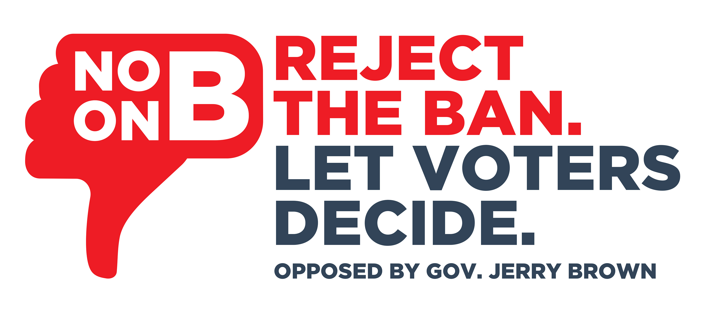

"A lifetime ban is a bad idea"
— former Governor
Jerry Brown
"A disservice to our democracy"
— former Mayor
Art Agnos
"Divisive and the wrong priority"
— College Board Trustee
Susan Solomon
"A solution in search of a problem"
— former Mayor
Willie Brown